Week 7 — Disaster Dataset Annotation Phase I
Planned Work
- Initiation of Disaster Dataset Annotation Phase I.
- Selection and preprocessing of bi-temporal satellite images for annotations.
- Production of binary change maps/masks for selected change scenes.
Findings
Observations
- We selected 5 representative bi-temporal remote sensing scenes containing significant land-use and infrastructure changes.
- High-quality binary change masks were manually annotated to distinguish real changes (e.g., new buildings, roads, land conversions) from seasonal/illumination variations.
- These annotations will serve as ground truth masks for training and evaluating our change detection models.
Decisions
- Utilize these annotated masks to train the proposed Region-Boundary Refinement Module.
- Proceed to annotation quality check and verification during next week's review.
Figures
Below are the bi-temporal satellite images (Before and After) along with their corresponding manually annotated binary change masks for the 5 selected scenes.
Scene 1
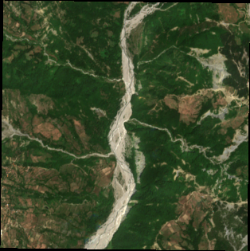
Before
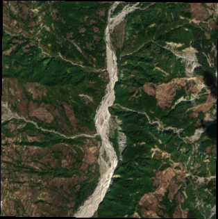
After
Mask
Scene 2
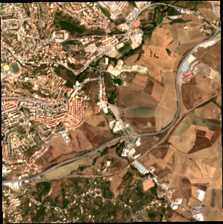
Before
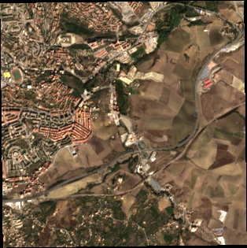
After
Mask
Scene 3
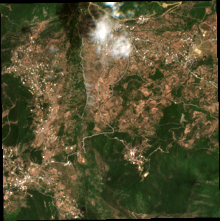
Before
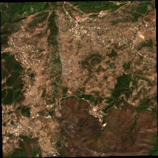
After
Mask
Scene 4
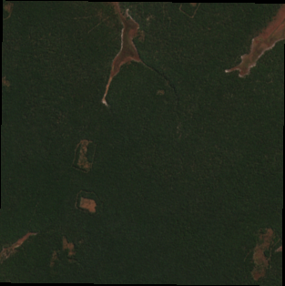
Before
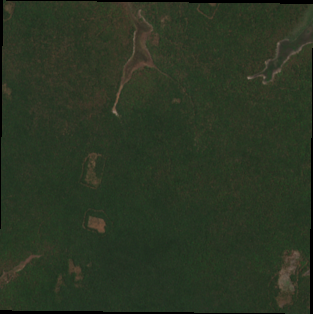
After
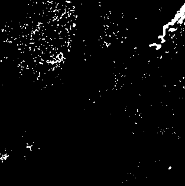
Mask
Scene 5
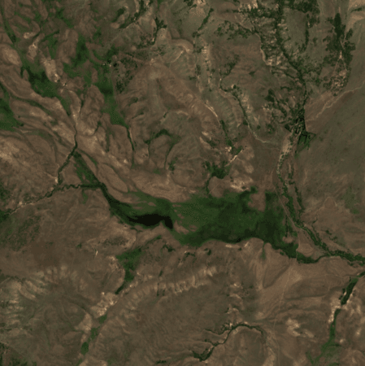
Before
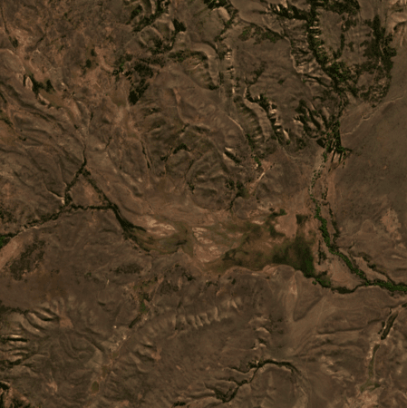
After
Mask
Next Week
Week 8 — Mid-Review
Mid-project presentation and evaluation of dataset annotation quality.